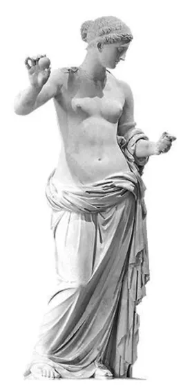

Entity Grimoire
 Aphrodite
Aphrodite
Semitic-rooted love/sea goddess with power over desire, beauty, fertility, winds, destiny. Queen of Beasts charming gods and mortals. Manifests as mermaid or dazzling woman. Sacred creatures: dove, swan, goat, dolphin. Number 6. Planet Venus and Sun.
Preferred Places
Preferred Vocations
- Lovers
- Prostitute
Domains & Sacred Objects
- Laughter
- Love
- Perfume
- Seashells
- Sex
Goddess-Consort Pattern
Aphrodite and Adonis exemplify ancient hierarchy where powerful goddesses had significantly younger male consorts whom they initiated, tutored, and sometimes killed. Goddess eternal; youthful consorts replaceable.
Adonis (vegetation deity) dies/resurrects annually, forever young while Aphrodite remains eternal. Pattern appears across cultures (Kybele/Attis, Inanna-Ishtar/Tammuz, Diana/Virbius), representing goddess's power over life, death, renewal.
Magickal Properties
Aphrodite embodies divine feminine power over love, desire, beauty, and the sea. Her dominion includes romantic and sexual love, physical beauty and attraction, fertility and procreation, and protection of sailors.
Ritual Uses
Work with Aphrodite for love Magick, beauty enhancement, fertility rituals, glamour work, artistic inspiration, and protection during sea voyages.
Offerings
Wine, honey, perfume, roses, myrtle, sweet pastries, mirrors, shells, and offerings related to her sacred animals.
Favored People
Lovers, artists, sex workers, beauty seekers, women in pursuit of autonomy, sailors, and those seeking pleasure and joy.
Petition For
Love, sex, beauty, fertility, artistry, glamour, mariner protection, and the courage to embrace desire.
Warnings
Fulfill vows; avoid coercive workings; can be vengeful when disrespected. Her power over desire must be approached with respect and ethical intent.
Syncretism
When the ancient Greeks encountered other cultures, they identified foreign love deities with Aphrodite based on shared domains. The Egyptian goddess Hathor, a spirit of love, beauty, perfume, and music, was declared to be Aphrodite. The Persian Anahita, a deity of romance and fertility, was also identified with her. These identifications became standard practice as Greek culture expanded.
Cosmic Origins and Mythic Lineage
In one mythic line Aphrodite is born as a cosmic deity from the foam of the ocean after her father Ouranos is castrated by Kronos and his genitals are cast into the sea. Her name in this reading derives from the Greek word for the sexual act. In other accounts she belongs to a younger generation as a daughter of Zeus. She is consort to Hephaistos and occasional mistress to other gods, including Ares. Through a liaison with the herdsman Anchises she bore Aeneas, who carried his father to safety on his back during the sack of Troy.
Cypriot and Mesopotamian Roots
Her strongest early cults rose on Cyprus, with sanctuaries at Paphos, Amathus, and Kition. The Kition sanctuary preserves Mycenaean-period forms that read as immediate predecessors of the Hellenic goddess. Paphos shows clear Phoenician inspiration. Aphrodite evolved from earlier Phoenician and Mesopotamian models of a goddess of love, and like those predecessors she is also a goddess of war and victory. In some contexts she is perceived as androgynous and even bearded, an aspect she shares with Artemis.
Worship Period and Cult Centers
A continuous worship horizon stretches from roughly 1300 BC, evolving out of an earlier prehistoric Asiatic model, through Christianization around 400 AD and later. Major centers of cult include Paphos, Amathus, and Kition on Cyprus, Corinth, and additional sites on the Greek mainland. Art references include Bronze Age Cypriot statuettes, votive stelae, the Parthenon frieze, and other contemporary sculpture. Literary witnesses include Homer's Iliad and Odyssey, Hesiod's Theogony and Hymn to Aphrodite, and the temple hymns, especially Sappho's Hymn.
In the Iliad
Aphrodite rescues Paris from his fight with Menelaus and carries him back to Helen of Troy at Troy.
Hellenic Art and Erotic Iconography
In Hellenic art Aphrodite is drawn in fine clothes and jewelry. She possesses a girdle with magickal properties. The famed Cnidos statue of circa 340 BC depicts her naked and is the first in a long lineage of erotic interpretations. The temple at Paphos once dispensed model phalli and lumps of salt to cultic pilgrims, and according to Strabo the Corinthian sanctuary maintained more than a thousand cultic prostitutes.
Carian Equivalent
In southwestern Turkey she was identified with the Carian fertility goddess Aphrodisias.
Additional Notes
Born from sea foam, connected to both Semitic goddess traditions and Greek mythology. Her many epithets reflect her widespread worship and varied aspects of power.
Role in Hellenic Household Worship

Household offerings to Aphrodite include the rose and myrtle, quince and apple, anemone (with the poppy as variant), and incense built of perfumes and fragrances. Her tokens are the shell, the mirror, and the knuckle-bone dice. The colours linked to Her are the sky's azure and green. Her sacred animals include the dove, the goose, the sparrow, and the turtle. Plants sacred to Her: pomegranate, apple, rose, myrtle, anemone, and poppy.
In Witchcraft
Aphrodite, identified with Roman Venus, governs the symbolic realm of the chalice in traditional love workings. The chalice is dedicated to the subtler powers of love and enchantment considered feminine in nature, invoking a symbolism akin to the classical divinities of love. Love spells and philter-craft are ideally worked on a Friday (Venus's day) during a waxing moon. For advanced timing: the moon in the first ten degrees of Taurus or Virgo, well aspected to Venus and Saturn. All flowers and blossoms are sacred to her; strewing the altar with sweet-smelling flowers before a love working is an act of reverence in her domain.